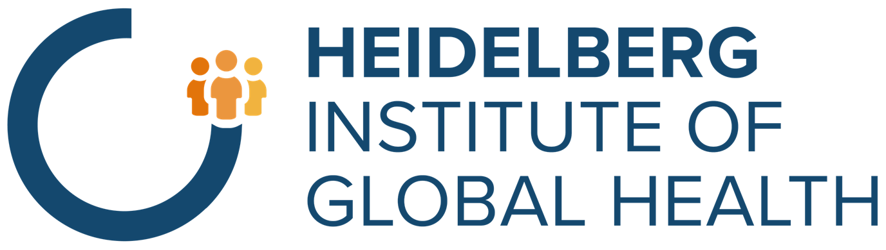
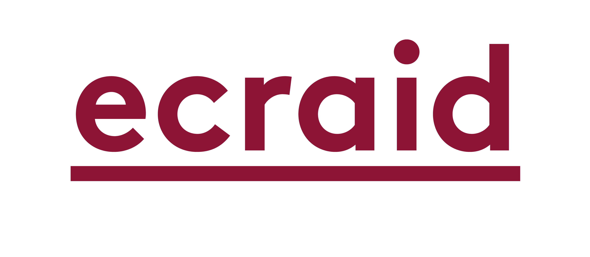
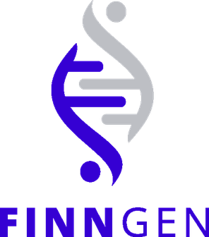
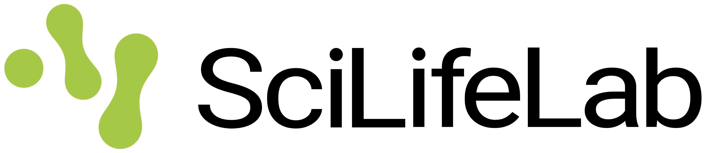

13 Oct 2026
Fully booked
The OMOP School
October 13–15 + October 16 (optional extra day) · Uppsala, Sweden
A 3+1-day OMOP CDM Bootcamp: a hands-on training and workshop that turns your data harmonization vision into reality.
Read moreEvents where you can learn more about OMOP and related topics.
October 13–15 + October 16 (optional extra day) · Uppsala, Sweden
A 3+1-day OMOP CDM Bootcamp: a hands-on training and workshop that turns your data harmonization vision into reality.
Read moreHighlight
On November 5th 2025, we proudly hosted the 1st OHDSI Sweden Symposium, and what an event it was! With 31 international and national speakers and panelists and over 150 participants, we explored how OMOP CDM and OHDSI open-science assets can transform Real-World Data into Real-World Evidence. The key takeaway: Sweden needs increased awareness and adoption of OMOP to harmonize health data and enable secure and effective reuse.
Read more & View the PresentationsOMOP in Practice Seminar Series
Friday March 20th, 13:00-14:00 (Online)
A real-world precision medicine case from clinical question and model development to implementation and evaluation in practice, using OMOP CDM and OHDSI tools.
Presenter: Andreas Weinberger Rosen, MD, PhD fellow, Center for Surgical Science, Zealand University Hospital and OHDSI collaborator, Denmark
OMOP in Practice Seminar Series
Friday March 13th, 13:00-14:00 (Online)
Experiences from the Horizon 2020 project ECRAID-Base. The webinar shows how observational study data can be harmonized into OMOP and highlights microbiology and AMR-specific challenges as well as ongoing OHDSI standardization work.

Presenters: Freija Descamps (edenceHealth NV, Belgium) and Ankur Krishnan (Heidelberg Institute of Global Health)


OMOP in Practice Seminar Series
Friday March 6th, 13:00-14:00 (Online)
A practical, nuts-and-bolts look at implementing OMOP in two global pharmaceutical environments. The session explores the journey from siloed use to a trusted, reusable data pipeline spanning multiple therapy areas. The presentation will cover the operating model, infrastructure, and best practices for building stakeholder trust.
Presenter: David Vizcaya, Director Epidemiology, Alexion Pharmaceutical Inc. and OHDSI collaborator
OMOP in Practice Seminar Series
Friday February 6th, 13:00-14:00 (Online)
How FinnGen uses OMOP CDM to harmonize national health registry and hospital data for large-scale genetic research and precision medicine.
Presenter: Javier Gracia-Tabuenca, Bioinformatician at Finnish Genomic Research Organisation (FinnGen)

December 8, 16:00
Join us for the final session in our OMOP webinar series. In this webinar, we will explore the role of real-world data (RWD) in regulatory processes, focusing on the OMOP Common Data Model (CDM) and its comparison with the clinical trial data standard SDTM. The session will highlight practical applications from European flagship projects and cover critical regulatory considerations, including data lineage, provenance, and validation requirements.
Read moreNovember 5, 09:00 - 17:15
The OHDSI Sweden Symposium 2025 will bring together leaders, researchers, and innovators across healthcare, life science, policy and patient organizations to explore how the international data model OMOP and assets from the open-science community OHDSI can unlock the value of Sweden’s health data. Participants will see examples how OMOP and OHDSI connect to national and European strategies, and how it enables data-driven and patient-centered healthcare, research, and innovation.
Read moreOctober 23, 16:00
Effective health research requires a robust pipeline from data exchange to data analysis. This webinar examines the crucial step between OMOP (Observational Medical Outcomes Partnership) Common Data Model and FHIR (Fast Healthcare Interoperability Resources).
Read moreOctober 3, 12:00 - 13:00
Raivo Kolde presents research about "OMOP ETL process" related to the publication: "Transforming Estonian health data to the Observational Medical Outcomes Partnership (OMOP) Common Data Model: lessons learned".
Read moreSeptember 2, 16:00 – 17:00
In the rapidly evolving landscape of healthcare data analytics, the OMOP Common Data Model (CDM) has emerged as a game-changer, revolutionizing the way real-world evidence (RWE) is generated and utilized. The presentation will draw from the OMOP experience from Helsinki University Hospital (HUS) and outline key steps, required competencies, and infrastructure needed for implementation, as well as information on how to join and leverage the international OHDSI network in the process. The presentation will show how HUS has successfully navigated the process from data sources, through ETL (Extract, Transform, Load) to OMOP data, quality control, to the first federated real-world study, and further into swarm-learning for predictive modelling in precision medicine. Use cases covered will include participation in DARWIN, an international OMOP study on immune checkpoint inhibitor uptake in metastatic non-small cell lung cancer (iCAN mNSCLC study-a-thon), and a swarm learning study across the Finnish university hospitals to cooperatively build a predictive model in acute myeloid leukaemia (AML).
